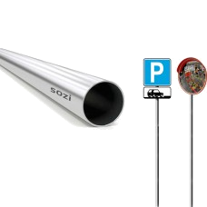

Дорожні знаки за ДСТУ 4100:2021
Стандартні дорожні знаки всіх груп для доріг, вулиць, підприємств, паркінгів і тимчасових схем руху.
- 7 груп знаків
- Типорозміри I-IV
- Плівка 5 / 7 / 10 років
АССА-ГРУП - дорожні знаки та обладнання
Виготовляємо дорожні знаки всіх груп, індивідуальні знаки ДЗІП та дорожнє обладнання для організацій, підрядників, підприємств і державних замовників. Готуємо КП, паспорт якості, документи для безготівкового розрахунку та доставляємо по Україні.
Основні напрямки продукції, з яких починається підбір для доріг, територій підприємств, паркінгів, ЖК та тимчасових схем руху.
Стандартні дорожні знаки всіх груп для доріг, вулиць, підприємств, паркінгів і тимчасових схем руху.

Виготовлення за макетом або технічним завданням: покажчики, схеми руху, знаки для територій і об'єктів.
Розрахувати ДЗІП
Стійки, кріплення та елементи для монтажу дорожніх знаків в одному замовленні.
Підібрати обладнанняПідготуємо пропозицію, документи, комплектацію та доставку під ваш формат замовлення.
Для бюджетних установ, громад, комунальних підприємств і замовників Prozorro.
Для підприємств, ЖК, паркінгів, складів, підрядників і приватних територій.
АССА-ГРУП — український виробник дорожніх знаків та обладнання для організацій, підрядників і власників об'єктів.
На окремій сторінці розкажемо більше про підхід компанії, відповідальних людей, виробництво та принципи роботи із замовниками.
Детальніше про компаніюПідбираємо дорожні знаки, комплектацію та документи під місце встановлення, схему руху й вимоги замовника.
Міські дороги, вулиці, двори, соціальні об'єкти та території громад.
Тимчасові схеми руху, об'їзди, попереджувальні та заборонні знаки.
Організація руху, паркомісця, обмеження в'їзду та знаки безпеки.
Внутрішній рух транспорту, зони завантаження та обмеження швидкості.
Паркінги, пішохідні зони, навігація, службові проїзди та в'їзди.
Пішохідна безпека, попереджувальні знаки та організація під'їзду.
Залиште контакти й коротко опишіть, які знаки або обладнання потрібні. Для першого розрахунку достатньо телефону, задачі та орієнтовної кількості.
Відповіді на типові питання про дорожні знаки, матеріали, плівку, комплектацію, вартість і замовлення під конкретний об'єкт.
Питання щодо тендерів і закупівель (Prozorro, CPV, документи) — у розділі
Тендери та закупівліТак, виготовляємо всі сім груп знаків, типорозміри I-IV, з паспортом якості на кожну партію.
Залежить від категорії дороги, місця встановлення, швидкості руху й потрібної видимості: від малих (паркінги, території підприємств) до великих (магістралі, місця дорожніх робіт). Підкажемо під ваш об'єкт.
Це різні класи світлоповертальної плівки за яскравістю й строком служби. Вища генерація — краще світлоповертання вночі й довший ресурс; обираємо під категорію дороги й бюджет.
Основа з оцинкованого металу зі світлоповертальною плівкою; тильний бік не віддзеркалює світло фар. Конструкція розрахована на зовнішню експлуатацію.
Так, виготовимо за вашим макетом або ТЗ: покажчики, схеми руху, знаки для підприємств, паркінгів і ЖК.
Так, комплектуємо знаки стійками, опорами й кріпленням — щоб не збирати замовлення по різних постачальниках.
Стандартні знаки — від 550 грн; точна ціна залежить від типорозміру й класу плівки. Працюємо як із поштучними замовленнями, так і з великими партіями.
Строк залежить від обсягу й комплектації — узгоджуємо під конкретне замовлення. Відвантажуємо по всій Україні.
Так, з організаціями працюємо за безготівковим розрахунком, з ПДВ і без ПДВ. Надаємо рахунок, договір і видаткову накладну.
Так. Прорахуємо потрібні знаки за схемою організації руху, проєктом чи переліком — підберемо типорозміри, плівку й комплектацію під об'єкт.